Data Visualization Masterclass - Part 1
"So What?" Framework, Pyramid Principle e i fondamenti di Dataviz
Contesto: Questo notebook didattico è stato progettato per la lezione di Data Analysis avanzato per Mondadori (Marzo 2026).
Dataset: I dati sono stati simulati, ispirandosi al mondo dell'editoria (catalogo libri, vendite, performance)
Strumenti: Python · Pandas · Matplotlib · Seaborn · Plotly
Struttura del Notebook
| Parte | Contenuto |
|---|---|
| 1 | Il Pyramid Principle di Barbara Minto e il framework "So What?" |
| 2 | Come l'AI si integra nel processo di analisi e storytelling |
| 3 | Setup: dataset editoriale simulato |
| 4 | Grammatica visuale: i mattoni della data visualization |
| 5 | Il "catalogo" dei grafici fondamentali |
| 6 | Tecniche di base: colore, annotazioni, layout |
| 7 | Esercizio guidato: dal dato all'insight con il Pyramid Principle |
Nota: Nella Parte 2 (prossimo notebook) vedremo quando scegliere quale grafico in base all'obiettivo comunicativo e le tecniche di trasformazione dei dati.
Il Pyramid Principle e il framework "So What?"
Cos'è il Pyramid Principle?
Il Pyramid Principle è un framework di comunicazione sviluppato da Barbara Minto negli anni '70 durante il suo lavoro in McKinsey. È il metodo standard usato nelle migliori società di consulenza per strutturare qualsiasi tipo di comunicazione analitica.
L'idea in breve
Ogni comunicazione efficace parte dalla conclusione, non dai dati.
La maggior parte delle persone comunica in modo bottom-up: parte dai dati, costruisce l'analisi e solo alla fine arriva alla conclusione. Il Pyramid Principle ribalta questo approccio:
❌ Bottom-up (come pensiamo naturalmente):
Dato → Dato → Dato → Analisi → Conclusione
✅ Top-down (come dovremmo comunicare):
Conclusione → Argomento 1 → Argomento 2 → Argomento 3
↓ ↓ ↓
Evidenze Evidenze EvidenzeLa struttura piramidale
┌─────────────────┐
│ MESSAGGIO │ ← La risposta / raccomandazione
│ PRINCIPALE │ (una frase sola)
└────────┬────────┘
│
┌──────────────┼──────────────┐
│ │ │
┌─────┴─────┐ ┌─────┴─────┐ ┌─────┴─────┐
│ Argomento │ │ Argomento │ │ Argomento │ ← Ragioni chiave
│ 1 │ │ 2 │ │ 3 │ (MECE)
└─────┬─────┘ └─────┬─────┘ └─────┬─────┘
│ │ │
Evidenze Evidenze Evidenze ← Dati, grafici, fattiLe 3 regole fondamentali
Inizia dalla risposta — Il messaggio principale va in cima.
Raggruppa in modo MECE — Mutually Exclusive, Collectively Exhaustive: gli argomenti non si sovrappongono e, insieme, coprono tutto.
Ordina logicamente — Per tempo, struttura, o importanza (vedi tu 😇).
Il Framework "So What?"
Il test "So What?" è il meccanismo di qualità del Pyramid Principle. Si applica ad ogni singolo elemento dell'analisi, in particolare ai grafici.
Come funziona
📊 "Le vendite del genere thriller sono cresciute del 23% nel Q3"
└─ So what?
"Il thriller sta sovraperformando rispetto a tutti gli altri generi"
└─ So what?
"Dovremmo riallocare il budget editoriale: +30% thriller, -15% poesia"
└─ So what?
"Raccomandazione: Presentare al comitato editoriale il piano di
riallocazione per il Q1, con 3 nuovi titoli thriller in pipeline"I 3 livelli del "So What?"
| Livello | Domanda | Output |
|---|---|---|
| L1 — Osservazione | Cosa vedo? | Descrizione del pattern |
| L2 — Insight | Perché è importante? | Interpretazione business |
| L3 — Azione | Cosa facciamo? | Raccomandazione concreta |
Esempio editoriale completo
MESSAGGIO PRINCIPALE:
"Il catalogo deve essere riequilibrato: il 60% dei ricavi
viene dal 15% dei titoli, e i generi in crescita sono sotto-rappresentati."
├── ARG 1: Concentrazione eccessiva dei ricavi
│ ├── Grafico: Curva di Pareto titoli vs ricavi
│ └── So What: Rischio elevato se 2-3 bestseller sottoperformano
│
├── ARG 2: Mismatch tra catalogo e domanda
│ ├── Grafico: Crescita generi vs % catalogo
│ └── So What: Opportunità persa stimata €2.4M/anno
│
└── ARG 3: I competitor si stanno muovendo
├── Grafico: Quote di mercato per genere (YoY)
└── So What: Finestra di opportunità si sta chiudendoTitoli descrittivi vs. titoli "So What?"
| ❌ Descrittivo | ✅ "So What?" |
|---|---|
| Vendite mensili 2024 | Le vendite sono in calo del 12% dal Q2: serve un intervento |
| Distribuzione per genere | Il 70% del catalogo è in generi in contrazione |
| Confronto autori | I top 5 autori generano più ricavi dei restanti 200 combinati |
| Andamento trimestrale | Q3 è il trimestre critico: ogni anno perdiamo il 18% |
Regola d'oro: Se il titolo del vostro grafico potrebbe essere il titolo di qualsiasi grafico sullo stesso topic, non è un buon titolo. Un buon titolo contiene già l'insight.
AI come acceleratore del "So What?"
Come l'AI cambia il workflow analitico
TRADIZIONALE (ore/giorni):
Dati grezzi → Pulizia → Esplorazione → Grafici → Pattern → Insight → Slide
AI-AUGMENTED (minuti/ore):
Dati grezzi → AI: pulizia + EDA → Human: validazione → AI: grafici + draft insight
↓
Human: "So What?" test
↓
AI: raffinamento + presentazioneDove l'AI è fortissima (e dove no)
| Task | AI è brava? | Note |
|---|---|---|
| Generare codice per grafici | ✅✅✅ | Descrivile cosa vuoi, genera il codice |
| Esplorare pattern nei dati | ✅✅ | Buona per EDA iniziale |
| Suggerire "So What?" L1 (osservazione) | ✅✅ | Descrive bene i pattern |
| Suggerire "So What?" L2 (insight) | ✅ | Necessita contesto di dominio |
| Suggerire "So What?" L3 (azione) | ⚠️ | Richiede sempre validazione umana |
| Conoscenza del contesto aziendale | ❌ | Qui serve il data scientist |
Il prompt pattern per il "So What?"
CONTESTO: [Descrivi il contesto business]
DATO/GRAFICO: [Descrivi cosa mostra]
DOMANDA: Applica il framework "So What?" a 3 livelli:
- L1: Cosa osserviamo?
- L2: Perché è importante per [stakeholder specifico]?
- L3: Quale azione concreta raccomandiamo?Generative Datavis
Pro tip: Quando chiedete all'AI di generare un grafico, non dite solo "fammi un bar chart". Dite "generami il codice per creare un grafico che mostri che il thriller sta dominando le vendite". Partite dal messaggio, non dal tipo di grafico.
Setup e creazione dataset editoriale
Installazione e import
import pandas as pd
import numpy as np
import matplotlib.pyplot as plt
import matplotlib.ticker as mticker
import matplotlib.dates as mdates
import seaborn as sns
from datetime import datetime, timedelta
import warnings
warnings.filterwarnings('ignore')
import plotly.express as px
import plotly.graph_objects as go
from plotly.subplots import make_subplots
plt.rcParams['figure.figsize'] = (12, 6)
plt.rcParams['figure.dpi'] = 100
plt.rcParams['font.family'] = 'sans-serif'
plt.rcParams['axes.spines.top'] = False
plt.rcParams['axes.spines.right'] = False
sns.set_palette("husl")
np.random.seed(42)
print("Setup completato!")
print(f" Pandas: {pd.__version__}")
print(f" NumPy: {np.__version__}")Setup completato!
Pandas: 2.2.2
NumPy: 2.0.2Creazione dataset editoriale
Creiamo un dataset realistico ispirato al mondo dell'editoria. Il dataset simula il catalogo e le vendite di una casa editrice con diverse collane, generi e autori.
Perché simuliamo? I dati simulati ci permettono di controllare i pattern e garantire che ogni tipo di grafico abbia qualcosa di interessante da mostrare.
# DATASET — Simulazione dati editoriali
GENERI = ['Narrativa', 'Thriller', 'Saggistica', 'Fantasy', 'Romance',
'Storico', 'Sci-Fi', 'Poesia', 'Bambini', 'Young Adult']
COLLANE = ['Oscar Mondadori', 'Strade Blu', 'Contemporanea', 'Chrysalide',
'Omnibus', 'Piccoli Brividi', 'Classici Moderni', 'Voci']
FORMATI = ['Cartaceo', 'Ebook', 'Audiolibro']
CANALI = ['Libreria fisica', 'Amazon', 'E-commerce proprio', 'GDO', 'Fiere/Eventi']
GENERE_WEIGHTS = {
'Narrativa': 0.22, 'Thriller': 0.18, 'Saggistica': 0.15,
'Fantasy': 0.10, 'Romance': 0.09, 'Storico': 0.08,
'Sci-Fi': 0.06, 'Poesia': 0.02, 'Bambini': 0.05, 'Young Adult': 0.05}
n_libri = 500; n_mesi = 24
libri = pd.DataFrame({
'libro_id': range(1, n_libri + 1),
'titolo': [f"Titolo_{i:03d}" for i in range(1, n_libri + 1)],
'genere': np.random.choice(list(GENERE_WEIGHTS.keys()), n_libri, p=list(GENERE_WEIGHTS.values())),
'collana': np.random.choice(COLLANE, n_libri),
'anno_pubblicazione': np.random.choice(range(2018, 2025), n_libri, p=[.05,.05,.08,.10,.15,.25,.32]),
'pagine': np.random.normal(280, 80, n_libri).astype(int).clip(80, 800),
'prezzo_copertina': np.round(np.random.uniform(9.90, 24.90, n_libri), 2),
'rating_goodreads': np.round(np.random.normal(3.7, 0.5, n_libri).clip(1.5, 5.0), 1),
'n_recensioni': np.random.exponential(150, n_libri).astype(int).clip(5, 5000)})
libri.loc[libri['genere'] == 'Thriller', 'prezzo_copertina'] *= 1.1
libri.loc[libri['genere'] == 'Narrativa', 'prezzo_copertina'] *= 1.05
libri.loc[libri['genere'] == 'Poesia', 'prezzo_copertina'] *= 0.8
libri['prezzo_copertina'] = libri['prezzo_copertina'].round(2)
date_range = pd.date_range('2023-01-01', periods=n_mesi, freq='MS')
vendite_records = []
for _, libro in libri.iterrows():
base = {'Narrativa':120,'Thriller':150,'Saggistica':80,'Fantasy':90,'Romance':70,
'Storico':50,'Sci-Fi':45,'Poesia':15,'Bambini':60,'Young Adult':55}[libro['genere']]
libro_mult = np.random.lognormal(0, 0.8)
for i, data in enumerate(date_range):
m = data.month
stag = {12:1.8, 11:1.3, 6:1.2, 7:1.2, 1:0.7, 2:0.7}.get(m, 1.0)
trend = {'Thriller':1+i*0.015,'Fantasy':1+i*0.01,'Young Adult':1+i*0.012,
'Poesia':1-i*0.008,'Saggistica':1-i*0.003}.get(libro['genere'], 1.0)
for fmt in FORMATI:
fs = {'Cartaceo':0.55,'Ebook':0.30,'Audiolibro':0.15}[fmt]
if fmt=='Ebook': fs *= (1+i*0.005)
if fmt=='Audiolibro': fs *= (1+i*0.02)
copie = max(0, int(base*libro_mult*stag*trend*fs*np.random.lognormal(0,0.3)))
if copie > 0:
vendite_records.append({'libro_id':libro['libro_id'],'data':data,'formato':fmt,
'canale':np.random.choice(CANALI,p=[.30,.35,.15,.12,.08]),'copie_vendute':copie,
'ricavo':round(copie*libro['prezzo_copertina']*{'Cartaceo':1,'Ebook':.65,'Audiolibro':.55}[fmt],2)})
vendite = pd.DataFrame(vendite_records)
df = vendite.merge(libri, on='libro_id', how='left')
df['anno'] = df['data'].dt.year
print(f"Dataset creato!")
print(f" Libri: {len(libri):,} | Record vendite: {len(vendite):,}")
print(f" Periodo: {date_range[0].strftime('%b %Y')} - {date_range[-1].strftime('%b %Y')}")
df.head(3)Dataset creato!
Libri: 500 | Record vendite: 35,904
Periodo: Jan 2023 - Dec 2024 libro_id data formato canale copie_vendute \
0 1 2023-01-01 Cartaceo Fiere/Eventi 43
1 1 2023-01-01 Ebook E-commerce proprio 15
2 1 2023-01-01 Audiolibro Amazon 11
ricavo titolo genere collana anno_pubblicazione pagine \
0 1035.87 Titolo_001 Thriller Piccoli Brividi 2020 272
1 234.88 Titolo_001 Thriller Piccoli Brividi 2020 272
2 145.74 Titolo_001 Thriller Piccoli Brividi 2020 272
prezzo_copertina rating_goodreads n_recensioni anno
0 24.09 3.1 8 2023
1 24.09 3.1 8 2023
2 24.09 3.1 8 2023Voglio far notare solo una cosa, il dataset nasce da 3 cicli annidati, ovvero:
Per ogni libro (500 libri)
└─ Per ogni mese (24 mesi: Gen 2023 → Dic 2024)
└─ Per ogni formato (3: Cartaceo, Ebook, Audiolibro)Il massimo teorico sarebbe 500 × 24 × 3 = 36.000 record. Ne otteniamo ~35.904 perché alcuni vengono scartati (copie = 0).
df.info()<class 'pandas.core.frame.DataFrame'>
RangeIndex: 35904 entries, 0 to 35903
Data columns (total 15 columns):
# Column Non-Null Count Dtype
--- ------ -------------- -----
0 libro_id 35904 non-null int64
1 data 35904 non-null datetime64[ns]
2 formato 35904 non-null object
3 canale 35904 non-null object
4 copie_vendute 35904 non-null int64
5 ricavo 35904 non-null float64
6 titolo 35904 non-null object
7 genere 35904 non-null object
8 collana 35904 non-null object
9 anno_pubblicazione 35904 non-null int64
10 pagine 35904 non-null int64
11 prezzo_copertina 35904 non-null float64
12 rating_goodreads 35904 non-null float64
13 n_recensioni 35904 non-null int64
14 anno 35904 non-null int32
dtypes: datetime64[ns](1), float64(3), int32(1), int64(5), object(5)
memory usage: 4.0+ MBprint("=" * 60)
print("SCHEMA DEL DATASET")
print("=" * 60)
print(f"\nDimensioni: {df.shape[0]:,} righe x {df.shape[1]} colonne")
for col in df.columns:
print(f" {col:25s} {str(df[col].dtype):10s} ({df[col].nunique():,} unici)")
print(f"\nRicavo totale: EUR {df['ricavo'].sum():,.0f}")
print(f"Copie totali: {df['copie_vendute'].sum():,.0f}")============================================================
SCHEMA DEL DATASET
============================================================
Dimensioni: 35,904 righe x 15 colonne
libro_id int64 (500 unici)
data datetime64[ns] (24 unici)
formato object (3 unici)
canale object (5 unici)
copie_vendute int64 (680 unici)
ricavo float64 (22,906 unici)
titolo object (500 unici)
genere object (10 unici)
collana object (8 unici)
anno_pubblicazione int64 (7 unici)
pagine int64 (254 unici)
prezzo_copertina float64 (428 unici)
rating_goodreads float64 (28 unici)
n_recensioni int64 (265 unici)
anno int32 (2 unici)
Ricavo totale: EUR 28,967,296
Copie totali: 1,987,829Grammatica visuale
Introduciamo le 7 proprietà visive (posizione, lunghezza, angolo, area, colore saturazione, colore hue, forma) con un ranking di efficacia per dati quantitativi vs categorici. Spieghiamo poi il concetto di Data-Ink Ratio di Tufte e lo vediamo insieme.
Le 7 proprietà visive (Visual Encoding)
| # | Proprietà | Quant. | Categ. |
|---|---|---|---|
| 1 | Posizione (asse x/y) | ⭐⭐⭐⭐⭐ | ⭐⭐⭐⭐ |
| 2 | Lunghezza (barre) | ⭐⭐⭐⭐ | — |
| 3 | Angolo/Pendenza | ⭐⭐⭐ | — |
| 4 | Area (bubble, treemap) | ⭐⭐ | — |
| 5 | Colore (saturazione) | ⭐⭐ | — |
| 6 | Colore (hue) | ⭐ | ⭐⭐⭐⭐⭐ |
| 7 | Forma | — | ⭐⭐⭐ |
Il Data-Ink Ratio (Edward Tufte)
"L'eccellenza nella grafica statistica consiste in idee complesse comunicate con chiarezza, precisione ed efficienza."
Data-Ink Ratio = Inchiostro per i dati / Inchiostro totale. Deve tendere a 1.
# Data-Ink Ratio — Prima e Dopo
generi_top5 = df.groupby('genere')['ricavo'].sum().nlargest(5).sort_values()
fig, (ax1, ax2) = plt.subplots(1, 2, figsize=(16, 5))
# PRIMA: basso data-ink ratio
ax1.barh(generi_top5.index, generi_top5.values/1e6,
color=['#ff6b6b','#ffa94d','#ffd43b','#69db7c','#4dabf7'], edgecolor='black', linewidth=1.5)
ax1.set_facecolor('#f0f0f0'); ax1.grid(True, linewidth=0.8, color='white')
ax1.set_title('Ricavi per Genere (M EUR)', fontsize=14, fontweight='bold')
ax1.spines['top'].set_visible(True); ax1.spines['right'].set_visible(True)
for s in ax1.spines.values(): s.set_linewidth(2)
ax1.text(0.5,-0.15,'PRIMA: troppo inchiostro, poco dato',transform=ax1.transAxes,ha='center',fontsize=11,color='red')
# DOPO: alto data-ink ratio
bars = ax2.barh(generi_top5.index, generi_top5.values/1e6, color='#2c3e50', height=0.6)
ax2.set_title(f'Il Thriller guida i ricavi con EUR {generi_top5.max()/1e6:.1f}M',
fontsize=13, fontweight='bold', loc='left', pad=10)
for sp in ['top','right','bottom','left']: ax2.spines[sp].set_visible(False)
ax2.xaxis.set_visible(False); ax2.tick_params(left=False)
for bar,val in zip(bars, generi_top5.values/1e6):
ax2.text(val+0.1, bar.get_y()+bar.get_height()/2, f'EUR {val:.1f}M', va='center', fontsize=11, fontweight='bold')
bars[-1].set_color('#e74c3c')
ax2.text(0.5,-0.15,'DOPO: pulito, So What nel titolo',transform=ax2.transAxes,ha='center',fontsize=11,color='green')
plt.tight_layout(); plt.show()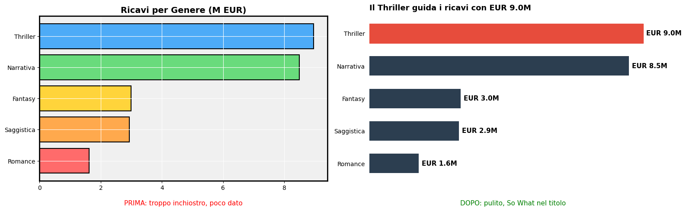
Catalogo dei grafici fondamentali
Per ogni famiglia di grafici mostriamo un esempio concreto sul dataset editoriale, sempre con titolo "So What?" e annotazioni.
| Categoria | Grafici | Domanda |
|---|---|---|
| Confronto | Bar, Grouped bar, Lollipop | Qual è più grande? |
| Distribuzione | Istogramma, Box, Violin, KDE | Come sono distribuiti? |
| Relazione | Scatter, Heatmap, Correlazione | C'è correlazione? |
| Gerarchia | Stacked bar, Treemap | Come e da cosa è composto? |
| Andamento | Line, Area | Come cambia nel tempo? |
Grafici di confronto: 50 shades of Bar Chart
Il seguente bar chart orizzontale mostra i ricavi per genere ordinati per valore, con i top 2 evidenziati in rosso/arancione e un box giallo in basso a destra con la raccomandazione. Il grouped bar confronta le copie vendute per formato nei top 5 generi, mostrando che il cartaceo domina ovunque. Il lollipop chart visualizza il rating medio Goodreads per genere con una linea verticale sulla media globale e punti verdi/rossi sopra/sotto media.
Regole d'oro: barre orizzontali per nomi lunghini, ordina per valore sull'asse Y partendo da zero.
# BAR CHART: Ricavi per Genere
ricavi_genere = df.groupby('genere')['ricavo'].sum().sort_values(ascending=True) / 1e6
fig, ax = plt.subplots(figsize=(12, 6))
colors = ['#2c3e50']*len(ricavi_genere); colors[-1]='#e74c3c'; colors[-2]='#e67e22'
bars = ax.barh(ricavi_genere.index, ricavi_genere.values, color=colors, height=0.65)
for bar,val in zip(bars, ricavi_genere.values):
ax.text(val+0.15, bar.get_y()+bar.get_height()/2, f'EUR {val:.1f}M', va='center', fontsize=10, fontweight='bold',
color='#e74c3c' if val==ricavi_genere.max() else '#2c3e50')
ax.set_title('Thriller e Narrativa da soli valgono il {:.0f}% dei ricavi totali'.format(
(ricavi_genere.nlargest(2).sum()/ricavi_genere.sum())*100),
fontsize=14, fontweight='bold', loc='left', pad=15)
ax.xaxis.set_visible(False)
for sp in ['bottom','left']: ax.spines[sp].set_visible(False)
ax.tick_params(left=False)
ax.text(0.98,0.02,'So What? La dipendenza da 2 generi e\' un rischio.\nDiversificare in Fantasy e Saggistica e Romance.',
transform=ax.transAxes,fontsize=9,va='bottom',ha='right',
bbox=dict(boxstyle='round,pad=0.5',facecolor='#fffde7',alpha=0.8))
plt.tight_layout(); plt.show()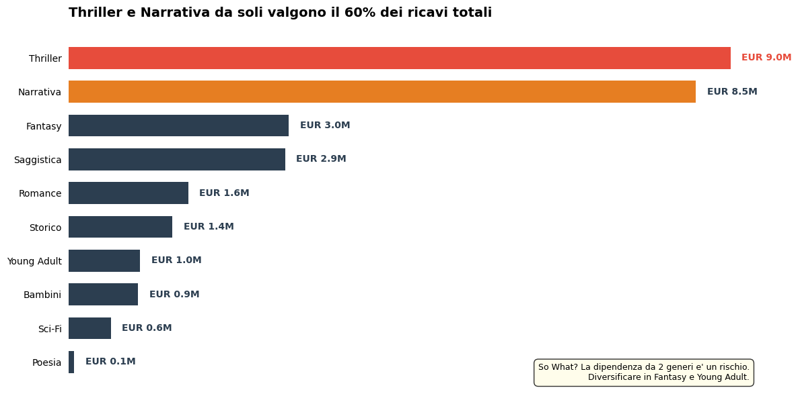
Se un bestseller Thriller o Narrativa sottoperforma, l'impatto sul fatturato è sproporzionato perché c'è un rischio di concentrazione.
Si suggerisce quindi di rafforzare i generi "medi" (Fantasy, Saggistica, Romance) che hanno già volumi significativi ma possono crescere, per ridurre la dipendenza dai top 2
# BAR CHART con annotazione part-of-whole
ricavi_genere = df.groupby('genere')['ricavo'].sum().sort_values(ascending=True) / 1e6
top2_pct = (ricavi_genere.nlargest(2).sum() / ricavi_genere.sum()) * 100
fig, ax = plt.subplots(figsize=(12, 6))
colors = ['#2c3e50'] * len(ricavi_genere)
colors[-1] = '#e74c3c'
colors[-2] = '#e67e22'
bars = ax.barh(ricavi_genere.index, ricavi_genere.values, color=colors, height=0.65)
for bar, val in zip(bars, ricavi_genere.values):
ax.text(val + 0.15, bar.get_y() + bar.get_height() / 2,
f'EUR {val:.1f}M', va='center', fontsize=10, fontweight='bold',
color='#e74c3c' if val == ricavi_genere.max() else '#2c3e50')
# --- Annotazione visiva "parentesi" per il 60% ---
n = len(ricavi_genere)
y_top = n - 1 # posizione barra Thriller (la più alta, ultima nel sort asc)
y_second = n - 2 # Narrativa
x_bracket = ricavi_genere.max() + 1.2
# Linee verticale e orizzontali della parentesi
ax.annotate('', xy=(x_bracket, y_top + 0.32), xytext=(x_bracket, y_second - 0.32),
arrowprops=dict(arrowstyle='-', color='#555', lw=1.5))
ax.plot([ricavi_genere.iloc[-1] + 0.15, x_bracket], [y_top + 0.32, y_top + 0.32], color='#555', lw=1.5)
ax.plot([ricavi_genere.iloc[-2] + 0.15, x_bracket], [y_second - 0.32, y_second - 0.32], color='#555', lw=1.5)
# Label percentuale
ax.text(x_bracket + 0.15, (y_top + y_second) / 2,
f'{top2_pct:.0f}%\ndel totale', va='center', fontsize=11,
fontweight='bold', color='#c0392b')
ax.set_title(
'Thriller e Narrativa da soli valgono il {:.0f}% dei ricavi totali'.format(top2_pct),
fontsize=14, fontweight='bold', loc='left', pad=15)
ax.xaxis.set_visible(False)
for sp in ['bottom', 'left']:
ax.spines[sp].set_visible(False)
ax.tick_params(left=False)
ax.set_xlim(0, ricavi_genere.max() + 2.5) # spazio per parentesi
ax.text(0.98, 0.02,
'So What? La dipendenza da 2 generi è un rischio.\nDiversificare in Fantasy e Young Adult.',
transform=ax.transAxes, fontsize=9, va='bottom', ha='right',
bbox=dict(boxstyle='round,pad=0.5', facecolor='#fffde7', alpha=0.8))
plt.tight_layout()
plt.show()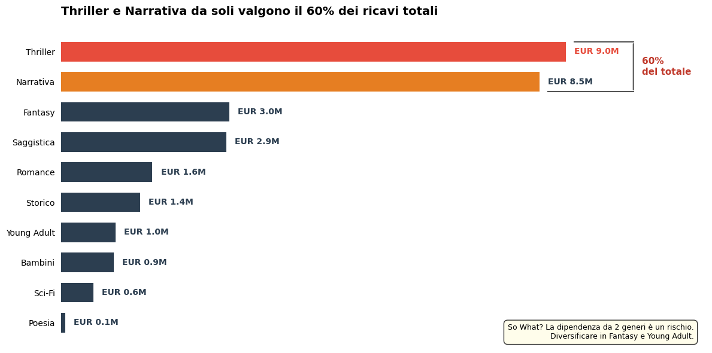
Grouped Bar Chart
# GROUPED BAR: Vendite per formato e genere (Top 5)
top5_g = df.groupby('genere')['ricavo'].sum().nlargest(5).index
vf = (df[df['genere'].isin(top5_g)].groupby(['genere','formato'])['copie_vendute'].sum().reset_index())
piv = vf.pivot(index='genere',columns='formato',values='copie_vendute')
piv = piv.loc[piv.sum(axis=1).sort_values(ascending=True).index]
fig, ax = plt.subplots(figsize=(12,6))
fc = {'Cartaceo':'#2c3e50','Ebook':'#3498db','Audiolibro':'#e74c3c'}
x = np.arange(len(piv)); w = 0.25
for i,(fmt,c) in enumerate(fc.items()):
if fmt in piv.columns:
v = piv[fmt].values/1000
ax.barh(x+i*w, v, w, label=fmt, color=c, alpha=0.85)
ax.set_yticks(x+w); ax.set_yticklabels(piv.index,fontsize=11)
ax.legend(loc='lower right', title='Copie vendute'); ax.xaxis.set_visible(False)
ax.set_title("Il cartaceo vende 2x rispetto agli ebook in ogni genere", fontsize=13, fontweight='bold', loc='left',pad=15)
for sp in ['bottom','left']: ax.spines[sp].set_visible(False)
ax.tick_params(left=False); plt.tight_layout(); plt.show()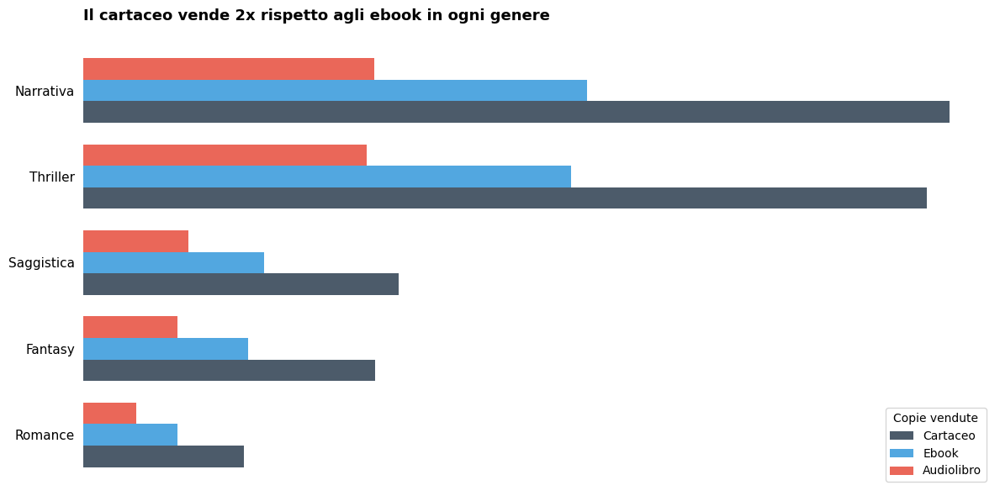
Lollipop Chart: il migliore data-ink ratio del bar chart
# LOLLIPOP: Rating medio per genere
rg = df.groupby('genere')['rating_goodreads'].mean().sort_values(ascending=True)
fig, ax = plt.subplots(figsize=(10,6))
mg = df['rating_goodreads'].mean()
ax.axvline(mg, color='#bdc3c7', linestyle='--', linewidth=1, label=f'Media: {mg:.2f}')
clr = ['#27ae60' if v>=mg else '#e74c3c' for v in rg.values]
ax.hlines(y=rg.index, xmin=mg, xmax=rg.values, color=clr, linewidth=2)
ax.scatter(rg.values, rg.index, color=clr, s=80, zorder=5)
for i,(g,v) in enumerate(rg.items()):
ax.text(v+(0.03 if v>=mg else -0.03), i, f'{v:.2f}', va='center',
ha='left' if v>=mg else 'right', fontsize=10, fontweight='bold', color=clr[i])
ax.set_title('Narrativa e saggi storici le recensioni migliori', fontsize=13, fontweight='bold', loc='left',pad=15)
for sp in ['bottom','left']: ax.spines[sp].set_visible(False)
ax.xaxis.set_visible(False); ax.tick_params(left=False); ax.legend(loc='lower right',fontsize=9)
plt.tight_layout(); plt.show()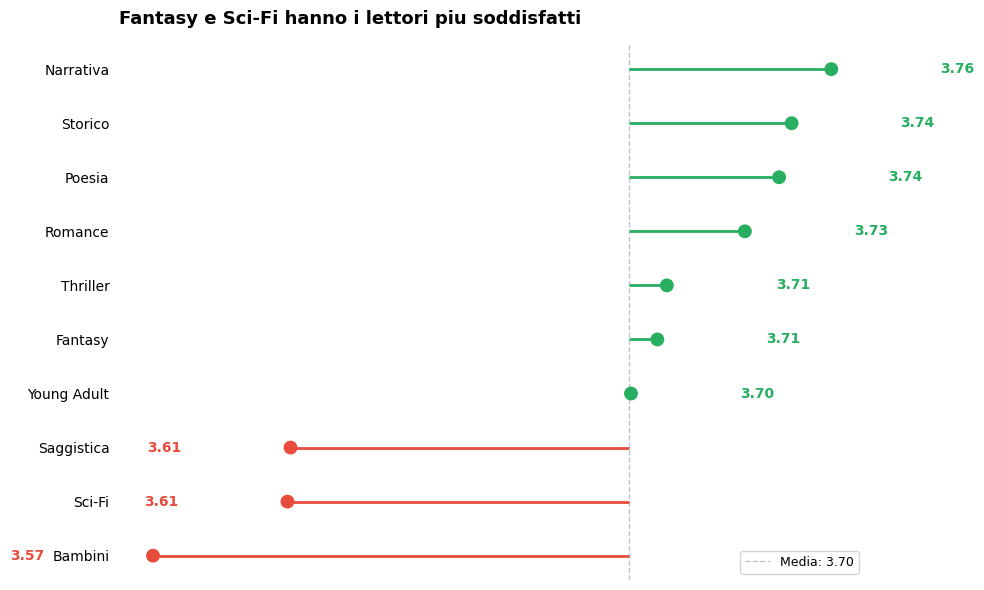
Grafici di Distribuzione
Ora vediamo in primis l'istogramma. In particolare questo viene mostrato tre volte sullo stesso dato (prezzo di copertina) con 5, 20 e 50 bin per dimostrare come la scelta dei bin cambia il messaggio percepito.
Poi il box plot, che confronta la distribuzione dei prezzi per genere ordinando per mediana decrescente.
Il violin plot mostra la distribuzione delle copie vendute (in scala log) per formato, evidenziando che l'audiolibro ha una distribuzione molto concentrata.
Il KDE sovrappone le curve di densità dei prezzi per anno di pubblicazione (2021-2024), mostrando lo spostamento verso l'alto dei prezzi recenti.
Istogramma: attenzione al numero di bin!
# ISTOGRAMMA: Effetto dei bin
fig, axes = plt.subplots(1,3,figsize=(16,5))
for ax,nb,t in zip(axes,[5,20,50],['5 bin: troppo pochi','20 bin: giusto','50 bin: troppi']):
ax.hist(libri['prezzo_copertina'],bins=nb,color='#3498db',edgecolor='white',alpha=0.8)
ax.set_title(t,fontsize=11,fontweight='bold'); ax.set_xlabel('Prezzo EUR')
ax.spines['top'].set_visible(False); ax.spines['right'].set_visible(False)
plt.suptitle('Il numero di bin cambia il messaggio!',fontsize=14,fontweight='bold',y=1.02)
plt.tight_layout(); plt.show()
Box Plot: 5 statistiche in un colpo
Le 5 statistiche del box plot sono:
- Mediana — la linea centrale nella scatola
- Q1 (1° quartile) — bordo inferiore della scatola
- Q3 (3° quartile) — bordo superiore della scatola
- Whiskers (baffi) — si estendono fino a Q1 − 1.5×IQR e Q3 + 1.5×IQR
- Outlier — i punti isolati oltre i whiskers
La scatola centrale racchiude il 50% dei dati (l'IQR, interquartile range)
# BOX PLOT: Prezzo per genere
om = libri.groupby('genere')['prezzo_copertina'].median().sort_values(ascending=False).index
fig, ax = plt.subplots(figsize=(14,6))
bp = ax.boxplot([libri[libri['genere']==g]['prezzo_copertina'] for g in om],
labels=om, patch_artist=True, widths=0.6,
medianprops=dict(color='#e74c3c',linewidth=2), whiskerprops=dict(color='#7f8c8d'))
for patch,c in zip(bp['boxes'],['#3498db','#2ecc71']*5):
patch.set_facecolor(c); patch.set_alpha(0.4)
ax.set_title('Thriller e Narrativa hanno i prezzi piu alti e variabili',
fontsize=13,fontweight='bold',loc='left',pad=15)
ax.set_ylabel('Prezzo EUR'); ax.tick_params(axis='x',rotation=30)
plt.tight_layout(); plt.show()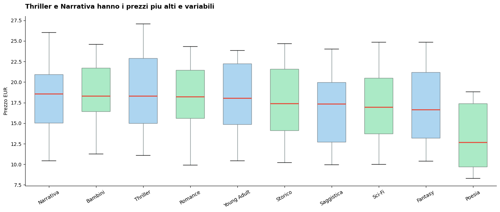
📢 ATTENZIONE 📢
Qui i colori non codificano nessuna variabile, alternano blu e verde solo per "decorazione", ma non c'è nessuna legenda né significato associato.
Anzi, potenzialmente potrebbero confondere: il lettore si chiede "cosa vuol dire blu vs verde?" e la risposta è... nulla.
Qui il colore dovrebbe o essere uniforme (un solo grigio/blu per tutti) oppure codificare qualcosa di utile ,per esempio evidenziare in rosso i generi con mediana sopra un certo prezzo target, e grigio gli altri. Così il colore avrebbe un "So What?".
È esattamente il principio della parte 6 e in parte già visto prima: grigio = default, colore solo per evidenziare
Violin Plot
Il violin plot è un box plot che ha imparato a parlare😀: oltre alle 5 statistiche classiche, mostra la densità della distribuzione lungo tutta la sua altezza. Dove il violino è più largo, lì si concentrano più dati.
In generale quando scegliere il:
- Box plot: confronti rapidi tra molte categorie (>5), audience non tecnica, spazio limitato. Il box plot è immediato e universale.
- Violin plot: quando la forma della distribuzione è la vera storia che vuole essere raccontata. Una distribuzione bimodale (due gobbe) è invisibile nel box plot ma evidente nel violin. Stesso discorso per distribuzioni molto asimmetriche o con addensamenti particolari a certi valori.
Regola pratica: se stai confrontando mediane → box plot. Se stai confrontando come si comportano i dati → violin plot.
# === GRAFICO 1: Violin Plot ===
# Messaggio: l'audiolibro ha distribuzione concentrata
fig, ax = plt.subplots(figsize=(10, 6))
ds = df.sample(10000, random_state=42)
formati = ['Cartaceo', 'Ebook', 'Audiolibro']
violin_data = []
for f in formati:
vals = np.log10(ds[ds['formato'] == f]['copie_vendute'].clip(1))
for v in vals:
violin_data.append({'formato': f, 'log10_copie': v})
violin_df = pd.DataFrame(violin_data)
# Grigio per tutti, rosso solo per l'audiolibro (è il messaggio)
palette_violin = {
'Cartaceo': '#bdc3c7',
'Ebook': '#bdc3c7',
'Audiolibro': '#e74c3c'
}
sns.violinplot(data=violin_df, x='formato', y='log10_copie',
palette=palette_violin, inner='quartile',
order=formati, ax=ax, linewidth=1.2, saturation=0.8)
# Annotazione mediane in unità leggibili
for i, f in enumerate(formati):
med = np.log10(ds[ds['formato'] == f]['copie_vendute'].clip(1)).median()
label = f'{10**med:.0f} copie'
ax.annotate(label, xy=(i, med), xytext=(i + 0.45, med),
fontsize=10, fontweight='bold',
color='#e74c3c' if f == 'Audiolibro' else '#7f8c8d',
arrowprops=dict(arrowstyle='-', color='gray', lw=0.5))
ax.set_title(
"L'audiolibro ha distribuzione concentrata: pochi bestseller",
#"pochi bestseller, molti titoli a basse vendite",
fontsize=12, fontweight='bold', loc='left', pad=15)
ax.set_xlabel('')
ax.set_ylabel('Copie vendute (scala log10)')
ax.spines['top'].set_visible(False)
ax.spines['right'].set_visible(False)
plt.tight_layout(); plt.show()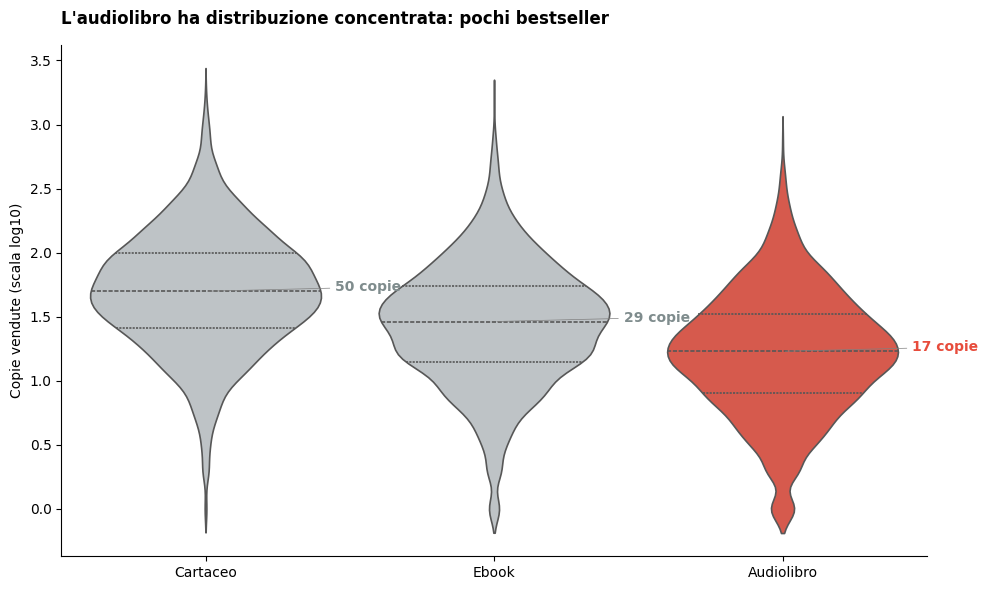
Perché la scala log10?
Perché le vendite per libro seguono una distribuzione lognormale molto asimmetrica. Pochi bestseller vendono migliaia di copie mentre la maggior parte dei titoli vende poche decine.
In scala lineare il violin sarebbe schiacciato tutto in basso con una coda lunga invisibile verso l'alto.
KDE Plot
from scipy import stats
fig, ax = plt.subplots(figsize=(12, 6))
generi_kde = ['Poesia', 'Saggistica', 'Fantasy', 'Narrativa', 'Thriller']
x_range = np.linspace(5, 35, 300)
stili = {
'Poesia': {'color': '#bdc3c7', 'lw': 1.5, 'alpha': 0.5, 'ls': ':'},
'Saggistica': {'color': '#bdc3c7', 'lw': 1.5, 'alpha': 0.5, 'ls': '--'},
'Fantasy': {'color': '#bdc3c7', 'lw': 1.5, 'alpha': 0.5, 'ls': '-.'},
'Narrativa': {'color': '#e67e22', 'lw': 3, 'alpha': 0.9, 'ls': '-'},
'Thriller': {'color': '#e74c3c', 'lw': 3, 'alpha': 0.9, 'ls': '-'},
}
for genere in generi_kde:
subset = libri[libri['genere'] == genere]['prezzo_copertina']
if len(subset) < 5:
continue
kde = stats.gaussian_kde(subset)
y_vals = kde(x_range)
s = stili[genere]
med = subset.median()
ax.plot(x_range, y_vals, color=s['color'], linewidth=s['lw'],
alpha=s['alpha'], linestyle=s['ls'],
label=f'{genere} (EUR {med:.0f})')
ax.vlines(med, 0, kde(med)[0], color=s['color'],
linewidth=1, alpha=0.4, linestyle=s['ls'])
ax.yaxis.set_visible(False)
for sp in ['left', 'top', 'right']:
ax.spines[sp].set_visible(False)
ax.set_xlabel('Prezzo di copertina (EUR)', fontsize=11)
ax.set_xlim(5, 35)
ax.legend(loc='center left', bbox_to_anchor=(1.02, 0.5),
fontsize=10, frameon=False,
title='Genere (mediana)', title_fontsize=10)
ax.set_title(
'Thriller e Narrativa nella fascia alta, Poesia e Saggistica in basso',
fontsize=13, fontweight='bold', loc='left', pad=15)
# Caption: spiega come leggere il grafico
fig.text(0.02, -0.02,
'Ogni curva mostra come si distribuiscono i prezzi di copertina per genere. '
'Piu la curva e alta, piu libri si concentrano a quel prezzo. '
'Le linee verticali indicano la mediana.',
fontsize=9, color='#7f8c8d', style='italic', va='top')
plt.tight_layout()
plt.show()
Grafici di Relazione
Ora vedremo:
scatter plot, mappa rating Goodreads (x) vs ricavo totale (y) per ogni libro, con colore = genere e dimensione del punto = numero di recensioni, mostrando che il rating alto non garantisce ricavi alti.
La heatmap mostra la matrice genere × mese con intensità normalizzata per riga, con un rettangolo che evidenzia la colonna di Dicembre.
La matrice di correlazione usa una maschera triangolare e palette divergente RdBu, rivelando che il numero di recensioni è il miglior predittore dei ricavi.
Scatter Plot
Lo scatter plot mappa la relazione tra due variabili continue. Ogni punto è un'osservazione (in questo caso un libro) e la sua posizione nel piano rivela se esiste una correlazione. In questo esempio vogliamo rispondere a una domanda comune in ambito editoriale: un rating alto su Goodreads si traduce in ricavi alti?
La risposta non è scontata. Un libro può avere 4.8 stelle ed essere letto da 30 persone, oppure 3.5 stelle e vendere centinaia di migliaia di copie. Il fattore discriminante non è la qualità percepita ma la visibilità, approssimata dal numero di recensioni.
Scelte di design fatte da me:
- Asse $X$ = rating Goodreads, Asse $Y$ = ricavo totale in EUR
- Colore = numero di recensioni, raggruppato in 4 fasce $(< 50, 50-200, 200-1K, > 1K)$ con palette sequenziale grigio → rosso. Questo è il vero driver e deve saltare all'occhio
- Dimensione uniforme: ricordiamoci che l'occhio umano è pessimo a confrontare aree (vedi Parte 4: le proprietà visive). Meglio usare il colore e dividere in 4 fasce le classi, con un ordinamento chiaro (poche = grigio, molte = rosso).
- Genere nell'hover, non nella legenda: il messaggio del grafico non riguarda i generi. Usare 10 colori per genere avrebbe nascosto il pattern principale. Il genere resta disponibile in hover per chi vuole esplorare.
- Plotly interattivo: permette di fare hover su ogni punto per vedere genere, prezzo, copie e recensioni. L'esplorazione sostituisce la legenda affollata. Però questa scelta la ritengo ultima per importanza rispetto alle altre fatte.
ls = (df.groupby(['libro_id','genere','rating_goodreads','n_recensioni','prezzo_copertina'])
.agg(ricavo_totale=('ricavo','sum'), copie_totali=('copie_vendute','sum')).reset_index())
ls['fascia_recensioni'] = pd.cut(
ls['n_recensioni'],
bins=[0, 50, 200, 1000, 10000],
labels=['< 50', '50-200', '200-1K', '> 1K']
)
fig = px.scatter(
ls,
x='rating_goodreads',
y='ricavo_totale',
color='fascia_recensioni',
color_discrete_map={
'< 50': '#d5d8dc',
'50-200': '#aeb6bf',
'200-1K': '#e67e22',
'> 1K': '#e74c3c',
},
category_orders={'fascia_recensioni': ['< 50', '50-200', '200-1K', '> 1K']},
hover_data={
'genere': True,
'n_recensioni': True,
'prezzo_copertina': ':.2f',
'copie_totali': ':,.0f',
'ricavo_totale': ':,.0f',
'rating_goodreads': ':.1f',
'fascia_recensioni': False,
},
labels={
'rating_goodreads': 'Rating Goodreads',
'ricavo_totale': 'Ricavo Totale (EUR)',
'fascia_recensioni': 'N. Recensioni',
'genere': 'Genere',
'n_recensioni': 'Recensioni',
'prezzo_copertina': 'Prezzo',
'copie_totali': 'Copie vendute',
},
opacity=0.6,
)
fig.update_traces(marker=dict(size=8, line=dict(width=0)))
fig.update_layout(
title=dict(
text=(
'<b>Il rating alto non garantisce ricavi: '
'servono le recensioni</b>'
'<br><sup>Ogni punto = un libro. '
'Colore = volume recensioni. Hover per dettagli.</sup>'
),
x=0, xanchor='left',
),
template='plotly_white',
height=550, width=900,
legend=dict(
title='N. Recensioni',
orientation='v',
yanchor='top', y=0.98,
xanchor='left', x=1.02,
font=dict(size=11),
),
xaxis=dict(dtick=0.5),
)
fig.show()Heatmap: Stagionalita per genere
# HEATMAP: Vendite per genere e mese
hd = df.groupby([df['data'].dt.month_name(),'genere'])['copie_vendute'].sum().reset_index()
hd.columns = ['mese','genere','copie']
mo = ['January','February','March','April','May','June','July','August','September','October','November','December']
ml = ['Gen','Feb','Mar','Apr','Mag','Giu','Lug','Ago','Set','Ott','Nov','Dic']
ph = hd.pivot(index='genere',columns='mese',values='copie')[mo]
pn = ph.div(ph.max(axis=1),axis=0)
fig, ax = plt.subplots(figsize=(14,7))
sns.heatmap(pn, annot=False, cmap='YlOrRd', linewidths=0.5, xticklabels=ml, ax=ax)
ax.set_title("Dicembre e' il mese d'oro per TUTTI i generi",fontsize=12,fontweight='bold',loc='left',pad=15)
ax.set_ylabel(''); ax.set_xlabel('')
from matplotlib.patches import Rectangle
ax.add_patch(Rectangle((11,0),1,len(pn),linewidth=3,edgecolor='#2c3e50',facecolor='none'))
plt.tight_layout(); plt.show()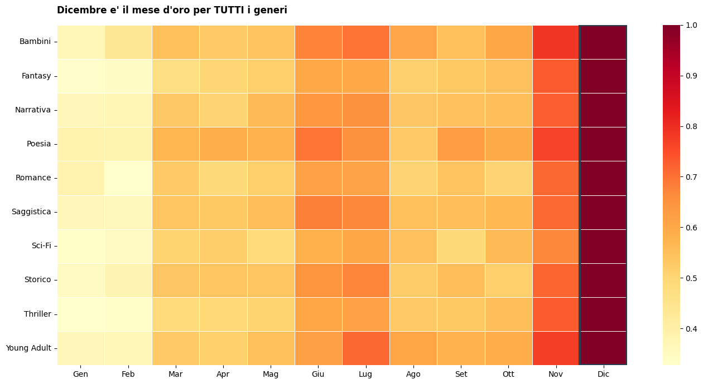
Matrice di correlazione
# CORRELATION MATRIX
lf = df.groupby('libro_id').agg(ricavo_totale=('ricavo','sum'),copie_totali=('copie_vendute','sum')).reset_index().merge(libri,on='libro_id')
nc = ['prezzo_copertina','pagine','rating_goodreads','n_recensioni','ricavo_totale','copie_totali']
li = ['Prezzo','Pagine','Rating','N.Recens.','Ricavo','Copie']
corr = lf[nc].corr()
mask = np.triu(np.ones_like(corr,dtype=bool))
fig, ax = plt.subplots(figsize=(9,7))
sns.heatmap(corr,mask=mask,annot=True,fmt='.2f',cmap='RdBu_r',center=0,vmin=-1,vmax=1,square=True,
xticklabels=li,yticklabels=li,linewidths=1,ax=ax)
ax.set_title('Il n. recensioni e il miglior predittore dei ricavi, non il rating',fontsize=12,fontweight='bold',loc='left',pad=15)
plt.tight_layout(); plt.show()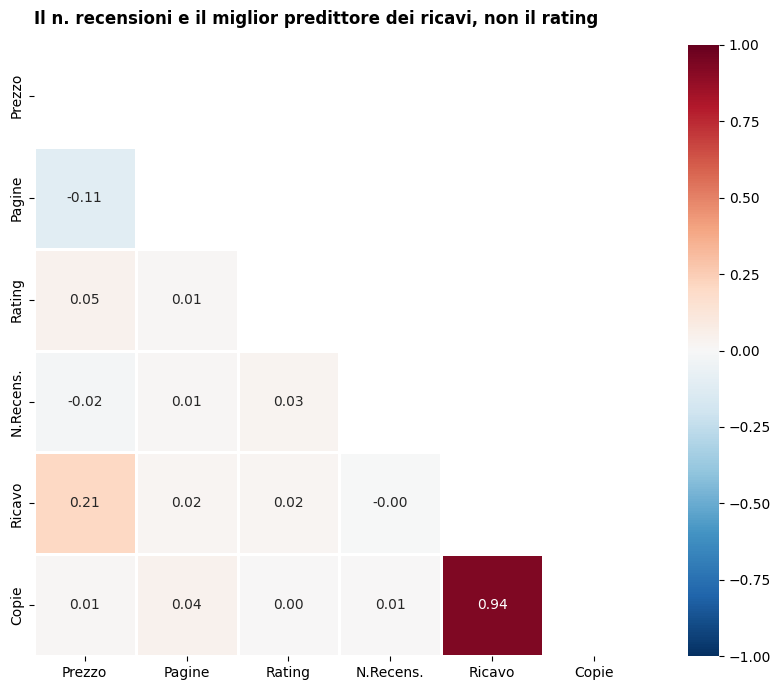
Grafici di composizione
In questa sezione vediamo:
- lo stacked bar 100% orizzontale, che mostra la quota dei 3 formati per ogni genere, evidenziando che Sci-Fi e Fantasy guidano il settore digitale.
- Il treemap Plotly interattivo visualizza la gerarchia genere → collana con colore proporzionale ai ricavi.
- Infine una nota critica sul pie chart con un confronto: a sinistra una torta a 2 fette che funziona (Cartaceo vs Digitale), a destra la stessa con 10 generi che diventa illeggibile.
Stacked Bar 100%
# STACKED BAR 100%: Quota formati per genere
sd = df.groupby(['genere','formato'])['ricavo'].sum().reset_index()
sp = sd.pivot(index='genere',columns='formato',values='ricavo')
spct = sp.div(sp.sum(axis=1),axis=0)*100
spct = spct.sort_values('Ebook',ascending=True)
fig, ax = plt.subplots(figsize=(12,6))
fc = {'Cartaceo':'#2c3e50','Ebook':'#3498db','Audiolibro':'#e74c3c'}
bot = np.zeros(len(spct))
for fmt in ['Cartaceo','Ebook','Audiolibro']:
v = spct[fmt].values
ax.barh(spct.index,v,left=bot,label=fmt,color=fc[fmt],height=0.65,alpha=0.85)
for i,(val,b) in enumerate(zip(v,bot)):
if val>10: ax.text(b+val/2,i,f'{val:.1f}%',ha='center',va='center',fontsize=9,color='white',fontweight='bold')
bot += v
ax.set_title('Sci-Fi e Fantasy guidano la transizione digitale',fontsize=12,fontweight='bold',loc='left',pad=15)
ax.legend(loc='lower right'); ax.set_xlim(0,100)
plt.tight_layout(); plt.show()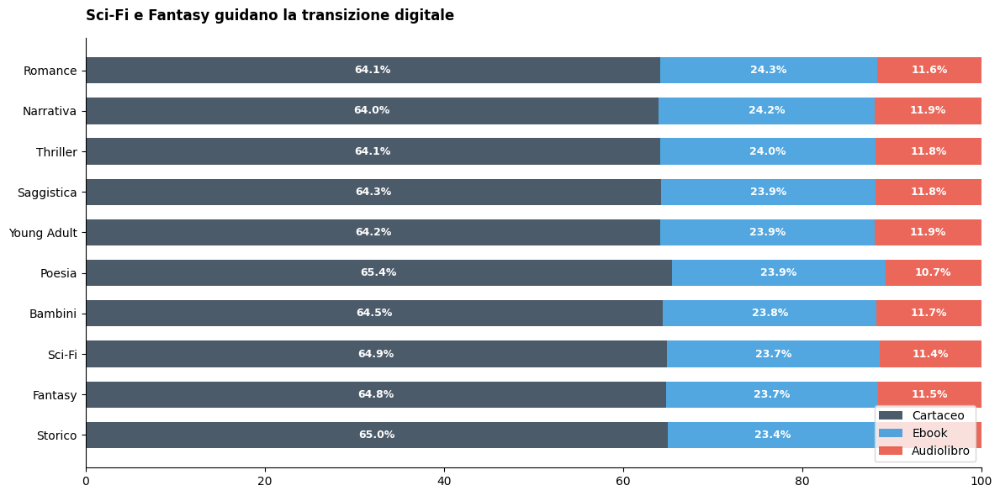
Treemap (Plotly interattivo)
# TREEMAP
td = df.groupby(['genere','collana'])['ricavo'].sum().reset_index()
fig = px.treemap(td, path=['genere','collana'], values='ricavo', color='ricavo', color_continuous_scale='RdYlBu_r',
title='<b>Mappa dei ricavi: Genere > Collana</b>')
fig.update_layout(margin=dict(t=50,l=10,r=10,b=10), height=500)
fig.show()Nota sul Pie Chart
Il pie chart e' il grafico piu' criticato. L'occhio umano e' pessimo a confrontare angoli.
Regola: Se potreste usare un bar chart al suo posto, usate il bar chart. Accettabile solo con 2-3 categorie e una dominante.
# Pie: quando funziona e quando no
fig, (ax1,ax2) = plt.subplots(1,2,figsize=(14,5))
ax1.pie([55,45],labels=['Cartaceo','Digitale'],autopct='%1.0f%%',colors=['#2c3e50','#3498db'],startangle=90,textprops={'fontsize':12})
ax1.set_title('OK: 2 categorie, chiaro',fontsize=10,fontweight='bold',pad=15)
rgp = df.groupby('genere')['ricavo'].sum().sort_values()
ax2.pie(rgp.values,labels=rgp.index,autopct='%1.0f%%',startangle=90,textprops={'fontsize':8})
ax2.set_title('NO: 10 categorie, illeggibile!',fontsize=10,fontweight='bold',pad=15)
plt.tight_layout(); plt.show()
Grafici temporali
Il line chart traccia le vendite mensili per formato con stili diversi (audiolibro in tratteggio rosso), bande gialle semitrasparenti sui Dicembre e titolo che annuncia la triplicazione dell'audiolibro.
Lo stacked area mostra l'evoluzione dei ricavi cumulati per i top 5 generi, rendendo visibile il contributo crescente del Thriller.
Line Chart
# LINE CHART: Vendite mensili per formato
vm = df.groupby([df['data'],'formato'])['copie_vendute'].sum().reset_index()
fig, ax = plt.subplots(figsize=(14,6))
for fmt,sty in [('Cartaceo',{'color':'#2c3e50','lw':2.5,'ls':'-'}),
('Ebook',{'color':'#3498db','lw':2.5,'ls':'-'}),
('Audiolibro',{'color':'#e74c3c','lw':2.5,'ls':'--'})]:
s = vm[vm['formato']==fmt]
ax.plot(s['data'],s['copie_vendute']/1000,label=fmt,color=sty['color'],linewidth=sty['lw'],linestyle=sty['ls'])
for y in [2023,2024]:
ax.axvspan(pd.Timestamp(f'{y}-12-01'),pd.Timestamp(f'{y}-12-31'),alpha=0.1,color='#f39c12',label='_nolegend_')
ax.set_title("L'audiolibro triplica in 2 anni: il futuro e' multiformat",fontsize=12,fontweight='bold',loc='left',pad=15)
ax.set_ylabel('Copie (migliaia)'); ax.legend(loc='upper left')
ax.xaxis.set_major_formatter(mdates.DateFormatter('%b %Y')); ax.xaxis.set_major_locator(mdates.MonthLocator(interval=3))
plt.xticks(rotation=30); plt.tight_layout(); plt.show()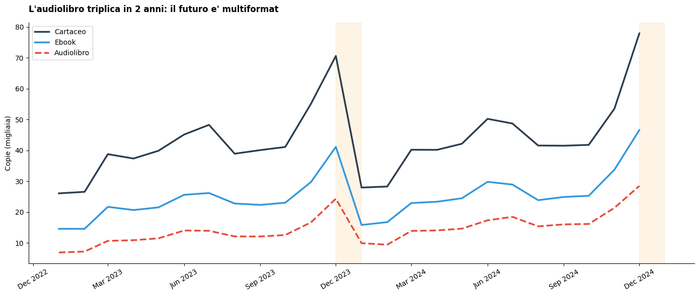
Stacked Area Chart
# STACKED AREA: Ricavi per genere Top 5
t5 = df.groupby('genere')['ricavo'].sum().nlargest(5).index
rm = (df[df['genere'].isin(t5)].groupby([df['data'],'genere'])['ricavo'].sum().reset_index()
.pivot(index='data',columns='genere',values='ricavo').fillna(0)/1000)
fig, ax = plt.subplots(figsize=(14,6))
ax.stackplot(rm.index,[rm[g] for g in rm.columns],labels=rm.columns,
colors=['#2c3e50','#e74c3c','#3498db','#27ae60','#f39c12'],alpha=0.7)
ax.set_title('Ricavi in crescita, trainati dal Thriller',fontsize=12,fontweight='bold',loc='left',pad=15)
ax.set_ylabel('Ricavi (EUR K)'); ax.legend(loc='upper left')
ax.xaxis.set_major_formatter(mdates.DateFormatter('%b %Y')); ax.xaxis.set_major_locator(mdates.MonthLocator(interval=3))
plt.xticks(rotation=30); plt.tight_layout(); plt.show()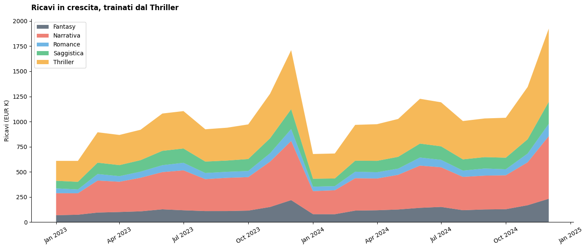
Tecniche fondamentali
Il potere delle annotazioni
Si può fare un confronto drammatico "prima/dopo" sullo stesso line chart dei ricavi trimestrali.
- Sopra: il grafico generico con titolo descrittivo "Ricavi Trimestrali (EUR M)".
- Sotto: lo stesso dato con linea target tratteggiata verde, punti colorati verde/rosso sopra/sotto target, frecce annotate su picco e minimo, box verde in alto a destra con le 3 azioni raccomandate, e titolo che dice "Servono strategie anti-stagionalità per Q1".
# ANNOTAZIONI: Prima e Dopo
rq = df.groupby(df['data'].dt.to_period('Q'))['ricavo'].sum()/1e6
rq.index = rq.index.to_timestamp()
fig, (ax1,ax2) = plt.subplots(2,1,figsize=(14,10),sharex=True)
ax1.plot(rq.index,rq.values,'o-',color='#3498db',linewidth=2)
ax1.set_title('Ricavi Trimestrali (EUR M)',fontsize=13); ax1.set_ylabel('EUR M')
ax1.text(0.5,-0.05,'PRIMA: informativo ma non azionabile',transform=ax1.transAxes,ha='center',fontsize=11,color='red')
ax2.plot(rq.index,rq.values,'o-',color='#2c3e50',linewidth=2.5)
tgt = rq.mean()*1.1
ax2.axhline(tgt,color='#27ae60',linestyle='--',linewidth=1.5,alpha=0.7)
ax2.text(rq.index[-1],tgt+0.1,f'Target: EUR {tgt:.1f}M',fontsize=9,color='#27ae60',fontweight='bold',ha='right')
for i in range(len(rq)):
c = '#27ae60' if rq.values[i]>=tgt else '#e74c3c'
ax2.plot(rq.index[i],rq.values[i],'o',color=c,markersize=10,zorder=5)
ax2.annotate(f'Picco: EUR {rq.max():.1f}M',xy=(rq.idxmax(),rq.max()),
xytext=(rq.idxmax()-pd.DateOffset(months=3),rq.max()+0.5),
arrowprops=dict(arrowstyle='->',color='#27ae60'),fontsize=10,fontweight='bold',color='#27ae60')
ax2.annotate(f'Minimo: EUR {rq.min():.1f}M',xy=(rq.idxmin(),rq.min()),
xytext=(rq.idxmin()+pd.DateOffset(months=2),rq.min()-0.1),
arrowprops=dict(arrowstyle='->',color='#e74c3c'),fontsize=10,fontweight='bold',color='#e74c3c')
ax2.set_title('Servono strategie anti-stagionalita per Q1',fontsize=13,fontweight='bold',loc='left',pad=15)
ax2.set_ylabel('EUR M')
ax2.text(0.9,0.95,'AZIONE: Promozioni Q1, uscite\n thriller anticipate a Gennaio',
transform=ax2.transAxes,fontsize=9,va='top',ha='right',
bbox=dict(boxstyle='round,pad=0.5',facecolor='#e8f5e9',alpha=0.9))
ax2.text(0.5,-0.1,'DOPO: stesso dato, racconta storia + suggerisce azione',transform=ax2.transAxes,ha='center',fontsize=11,color='green')
for ax in [ax1,ax2]: ax.spines['top'].set_visible(False); ax.spines['right'].set_visible(False)
plt.tight_layout(); plt.show()
Il colore nella Data Visualization
| Tipo | Uso |
|---|---|
| Sequenziale | Basso → Alto |
| Divergente | Negativo ← Neutro → Positivo |
| Categorica | Categorie distinte |
Regole: Grigio = default. Max 6-7 colori. Attenzione daltonici (~8% uomini).
Ora vediamo solo un bar chart orizzontale della crescita YoY per genere. Usiamo solo 3 colori con significato semantico: rosso per calo, grigio per crescita moderata, verde per crescita forte (>15%). Le etichette riportano il delta con segno. Questo dimostra il principio "grigio = default, colore solo per evidenziare".
# COLORE STRATEGICO: Variazione YoY
r23 = df[df['anno']==2023].groupby('genere')['ricavo'].sum()
r24 = df[df['anno']==2024].groupby('genere')['ricavo'].sum()
yoy = ((r24-r23)/r23*100).sort_values()
fig, ax = plt.subplots(figsize=(12,6))
cy = ['#e74c3c' if v<0 else '#bdc3c7' if v<15 else '#27ae60' for v in yoy.values]
bars = ax.barh(yoy.index,yoy.values,color=cy,height=0.6)
ax.axvline(0,color='#2c3e50',linewidth=0.8)
for bar,val in zip(bars,yoy.values):
ax.text(val+(1 if val>=0 else -1), bar.get_y()+bar.get_height()/2,
f'{val:+.1f}%',va='center',ha='left' if val>=0 else 'right',fontsize=10,fontweight='bold',
color='#e74c3c' if val<0 else '#27ae60' if val>=15 else '#7f8c8d')
ax.set_title('Crescita YoY: Fantasy esplode, Poesia in calo',fontsize=13,fontweight='bold',loc='left',pad=15)
for sp in ['top','right','bottom','left']: ax.spines[sp].set_visible(False)
ax.xaxis.set_visible(False); ax.tick_params(left=False)
plt.tight_layout(); plt.show()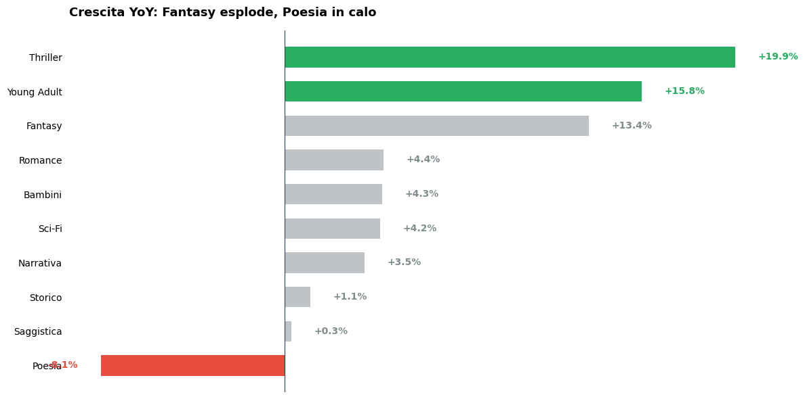
Small Multiples
"Small multiples are the most effective way to display complex data." — Edward Tufte. Statistico e scultore statunitense.
Gli small multiples affiancano più grafici identici nella struttura ma diversi nei dati, permettendo confronti istantanei tra categorie. La tentazione è usare sharey=True per rendere le scale comparabili, ma quando i volumi assoluti sono molto diversi (Thriller a 35k copie, Storico a 3k) si sacrifica la leggibilità di tutti i generi minori sull'altare della comparabilità.
La scelta qui è sharey=False: ogni genere ha la sua scala Y, perché l'obiettivo non è confrontare i volumi assoluti (già fatto nel bar chart della sezione 5.1) ma leggere la dinamica interna di ciascun genere nel tempo.
La media mobile a 6 mesi filtra il rumore stagionale e rivela il trend strutturale. L'area riempita mostra i dati mensili grezzi come contesto; la linea scura è il messaggio. La variazione % in alto a destra sintetizza in un numero quello che l'occhio già intuisce dalla pendenza.
Regola pratica: negli small multiples, scegli sharey=True solo se il confronto dei valori assoluti è la storia principale. Se la storia è il trend, libera ogni pannello sulla sua scala.
# SMALL MULTIPLES: Trend per genere (fixed)
t6 = df.groupby('genere')['ricavo'].sum().nlargest(6).index
fig, axes = plt.subplots(2, 3, figsize=(16, 8), sharey=False, sharex=True) # sharey=False!
for i, g in enumerate(t6):
ax = axes.flatten()[i]
s = (df[df['genere'] == g]
.groupby('data')['copie_vendute'].sum()
.reset_index())
s['ma6'] = s['copie_vendute'].rolling(6, center=True).mean() # 6 mesi, più smooth
# Area = dati raw (contesto), linea = trend smoothed (messaggio)
ax.fill_between(s['data'], 0, s['copie_vendute'] / 1000,
alpha=0.12, color='#3498db', label='Mensile')
ax.plot(s['data'], s['ma6'] / 1000,
color='#2c3e50', linewidth=2.5, label='Media 6m')
# Variazione % primo vs ultimo valore della MA
ma_clean = s['ma6'].dropna()
delta_pct = (ma_clean.iloc[-1] - ma_clean.iloc[0]) / ma_clean.iloc[0] * 100
color_delta = '#27ae60' if delta_pct > 0 else '#e74c3c'
arrow = '▲' if delta_pct > 0 else '▼'
ax.set_title(f'{g}', fontsize=12, fontweight='bold', loc='left')
ax.text(0.98, 0.95, f'{arrow} {abs(delta_pct):.0f}%',
transform=ax.transAxes, fontsize=11, fontweight='bold',
color=color_delta, ha='right', va='top')
# Asse Y con unità chiara
ax.set_ylabel('Copie (k)', fontsize=8)
ax.spines['top'].set_visible(False)
ax.spines['right'].set_visible(False)
ax.xaxis.set_major_formatter(mdates.DateFormatter('%b\n%y'))
ax.xaxis.set_major_locator(mdates.MonthLocator(interval=6))
ax.tick_params(labelsize=8)
# Legenda unica in alto
axes[0, 0].legend(fontsize=8, loc='upper left', frameon=False)
plt.suptitle('Trend vendite per genere — variazione % sull\'intero periodo',
fontsize=14, fontweight='bold', y=1.02)
plt.tight_layout()
plt.show()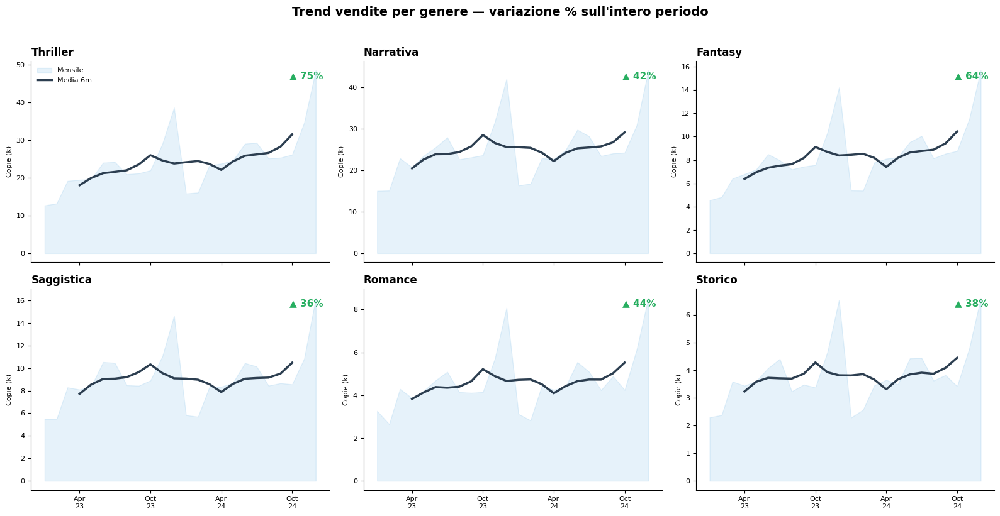
Grafici interattivi con Plotly
# PLOTLY INTERATTIVO
lpx = (df.groupby(['libro_id','genere','collana','rating_goodreads','n_recensioni','prezzo_copertina','anno_pubblicazione'])
.agg(ricavo_totale=('ricavo','sum'),copie_totali=('copie_vendute','sum')).reset_index())
fig = px.scatter(lpx, x='n_recensioni', y='ricavo_totale', color='genere', size='copie_totali', size_max=25,
hover_data=['collana','prezzo_copertina','rating_goodreads','anno_pubblicazione'],
title='<b>Esplora il catalogo: ogni punto e un libro</b><br><i>Dimensione = copie. Hover per dettagli.</i>',
labels={'n_recensioni':'N. Recensioni','ricavo_totale':'Ricavo (EUR)','genere':'Genere'}, opacity=0.6)
fig.update_layout(height=550,template='plotly_white',
legend=dict(orientation="h",yanchor="bottom",y=-0.25,xanchor="center",x=0.5))
fig.show()Esercizio Guidato - Dal Dato all'Insight
Scenario
Il direttore chiede: "Come sta andando il catalogo? Dobbiamo cambiare qualcosa?"
3 slide con il Pyramid Principle:
MESSAGGIO: "Servono 3 interventi: diversificare generi, accelerare digitale, ridurre stagionalita"
├── ARG 1: Concentrazione rischiosa → Pareto + Bar
├── ARG 2: Digitale da accelerare → Stacked Area
└── ARG 3: Stagionalita marcata → Line + Annotazioni# ANALISI RAPIDA
print("=" * 60)
print("ANALISI RAPIDA DEL CATALOGO")
print("=" * 60)
rl = df.groupby('libro_id')['ricavo'].sum().sort_values(ascending=False)
t10 = int(len(rl)*0.1)
print(f"\nTop 10% ({t10} libri) = {rl.head(t10).sum()/rl.sum()*100:.0f}% dei ricavi")
r23f = df[df['anno']==2023].groupby('formato')['ricavo'].sum()
r24f = df[df['anno']==2024].groupby('formato')['ricavo'].sum()
print("\nCrescita formati YoY:")
for f in ['Cartaceo','Ebook','Audiolibro']:
if f in r23f.index and f in r24f.index:
print(f" {f}: {(r24f[f]-r23f[f])/r23f[f]*100:+.1f}%")
r23g = df[df['anno']==2023].groupby('genere')['ricavo'].sum()
r24g = df[df['anno']==2024].groupby('genere')['ricavo'].sum()
yg = ((r24g-r23g)/r23g*100).sort_values(ascending=False)
print("\nGeneri YoY:")
for g in yg.index: print(f" {'UP' if yg[g]>10 else 'FLAT' if yg[g]>0 else 'DOWN'} {g}: {yg[g]:+.1f}%")
rm = df.groupby(df['data'].dt.month)['ricavo'].mean()
gap = (rm.max()-rm.min())/rm.mean()*100
print(f"\nGap stagionale: {gap:.0f}%")============================================================
ANALISI RAPIDA DEL CATALOGO
============================================================
Top 10% (50 libri) = 40% dei ricavi
Crescita formati YoY:
Cartaceo: +5.4%
Ebook: +11.8%
Audiolibro: +27.8%
Generi YoY:
UP Thriller: +19.9%
UP Young Adult: +15.8%
UP Fantasy: +13.4%
FLAT Romance: +4.4%
FLAT Bambini: +4.3%
FLAT Sci-Fi: +4.2%
FLAT Narrativa: +3.5%
FLAT Storico: +1.1%
FLAT Saggistica: +0.3%
DOWN Poesia: -8.1%
Gap stagionale: 112%# SLIDE 1: Concentrazione (Pareto)
fig,(ax1,ax2) = plt.subplots(1,2,figsize=(16,6),gridspec_kw={'width_ratios':[1.3,1]})
rs = rl.values/1e6; rc = np.cumsum(rs)/np.cumsum(rs)[-1]*100
xp = np.arange(1,len(rs)+1)/len(rs)*100
ax1.fill_between(xp,rc,alpha=0.3,color='#3498db'); ax1.plot(xp,rc,color='#2c3e50',linewidth=2)
ax1.axhline(80,color='#e74c3c',linestyle='--',alpha=0.7)
i80 = np.argmin(np.abs(rc-80)); p80 = xp[i80]
ax1.axvline(p80,color='#e74c3c',linestyle='--',alpha=0.7)
ax1.annotate(f'Solo il {p80:.0f}% dei titoli\ngenera l\'80% dei ricavi',
xy=(p80,80),xytext=(p80+20,60),arrowprops=dict(arrowstyle='->',color='#e74c3c',lw=2),
fontsize=11,fontweight='bold',color='#e74c3c',bbox=dict(boxstyle='round',facecolor='#ffebee',alpha=0.9))
ax1.set_xlabel('% Titoli'); ax1.set_ylabel('% Ricavi cumulati'); ax1.set_xlim(0,100); ax1.set_ylim(0,100)
rgen = df.groupby('genere')['ricavo'].sum().sort_values(ascending=True)/1e6
ax2.barh(rgen.index,rgen.values,color=['#e74c3c' if g in rgen.nlargest(2).index else '#bdc3c7' for g in rgen.index],height=0.6)
for i,(g,v) in enumerate(rgen.items()): ax2.text(v+0.1,i,f'EUR {v:.1f}M',va='center',fontsize=9,fontweight='bold')
ax2.set_title('Due generi dominano',fontsize=12,fontweight='bold',loc='left')
ax2.xaxis.set_visible(False)
for sp in ['bottom','left']: ax2.spines[sp].set_visible(False)
ax2.tick_params(left=False)
plt.suptitle('SLIDE 1: Concentrazione eccessiva',fontsize=14,fontweight='bold',y=1.02)
plt.tight_layout(); plt.show()
# SLIDE 2: Transizione digitale
fm = (df.groupby([df['data'],'formato'])['ricavo'].sum().reset_index()
.pivot(index='data',columns='formato',values='ricavo').fillna(0)/1000)
fig, ax = plt.subplots(figsize=(14,6))
ax.stackplot(fm.index,[fm['Cartaceo'],fm['Ebook'],fm['Audiolibro']],
labels=['Cartaceo','Ebook','Audiolibro'],colors=['#2c3e50','#3498db','#e74c3c'],alpha=0.75)
ds = fm.iloc[:3][['Ebook','Audiolibro']].sum().sum()/fm.iloc[:3].sum().sum()*100
de = fm.iloc[-3:][['Ebook','Audiolibro']].sum().sum()/fm.iloc[-3:].sum().sum()*100
ax.set_title(f'SLIDE 2: Digitale dal {ds:.0f}% al {de:.0f}% — accelerare',fontsize=13,fontweight='bold',loc='left',pad=15)
ax.set_ylabel('Ricavi EUR K'); ax.legend(loc='upper left')
ax.xaxis.set_major_formatter(mdates.DateFormatter('%b %Y'))
plt.xticks(rotation=30); plt.tight_layout(); plt.show()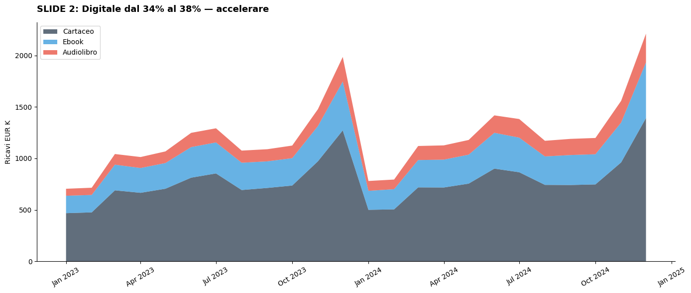
# SLIDE 3: Stagionalita
rmt = df.groupby('data')['ricavo'].sum()/1e6
fig, ax = plt.subplots(figsize=(14,6))
ax.plot(rmt.index,rmt.values,'o-',color='#2c3e50',linewidth=2.5)
med = rmt.mean()
ax.axhline(med,color='#27ae60',linestyle='--',alpha=0.5)
ax.fill_between(rmt.index,med*0.9,med*1.1,alpha=0.1,color='#27ae60')
for d,v in rmt.items():
ax.plot(d,v,'o',color='#27ae60' if v>=med else '#e74c3c',markersize=8,zorder=5)
ax.set_title(f'SLIDE 3: Gap stagionale {gap:.0f}% — appiattire la curva',fontsize=13,fontweight='bold',loc='left',pad=15)
ax.set_ylabel('Ricavi EUR M')
ax.xaxis.set_major_formatter(mdates.DateFormatter('%b %Y'))
plt.xticks(rotation=30)
ax.text(0.98,0.02,'RACCOMANDAZIONI:\n1. Promozioni Q1\n2. Bundle digitali fuori stagione\n3. Campagna "leggere tutto l\'anno"',
transform=ax.transAxes,fontsize=9,va='bottom',ha='right',bbox=dict(boxstyle='round',facecolor='#e8f5e9',alpha=0.9))
plt.tight_layout(); plt.show()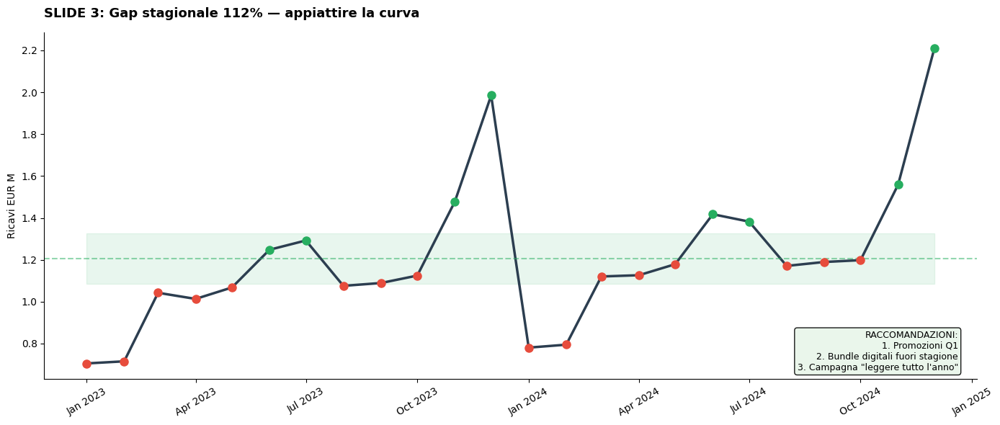
🎓 Recap e Prossimi Passi
Cosa abbiamo imparato
- Pyramid Principle: Comunica top-down, dalla conclusione alle evidenze
- Framework "So What?": Ogni grafico deve passare 3 livelli (osservazione → insight → azione)
- Grammatica visuale: Posizione e lunghezza > Area e colore per dati quantitativi
- Data-Ink Ratio: Eliminate il rumore visivo
- Catalogo grafici: Bar, Box, Violin, Scatter, Heatmap, Line, Stacked Area, Treemap
- Tecniche: Annotazioni, colore strategico, small multiples, interattività
Checklist prima di ogni presentazione
- Ho costruito la piramide PRIMA di fare i grafici?
- Ogni grafico ha un titolo "So What?" (non descrittivo)?
- Ho usato il colore per evidenziare, non per decorare?
- Il data-ink ratio è alto?
- Ogni grafico supporta un argomento specifico della piramide?
- Se rimuovo un grafico, l'argomentazione ne risente?
Nel prossimo notebook (Parte 2)
- Quando usare quale grafico: matrice decisionale basata sull'obiettivo comunicativo
- Trasformazione dati: normalizzazione, log scale, indici, moving averages
- Grafici avanzati: Slope chart, Bump chart, Waffle, Dumbbell, Waterfall
- Dashboard design: come comporre più grafici in una vista coerente
"The purpose of visualization is insight, not pictures." — Ben Shneiderman
Notebook sorgente: datavis_masterclass_parte1.ipynb